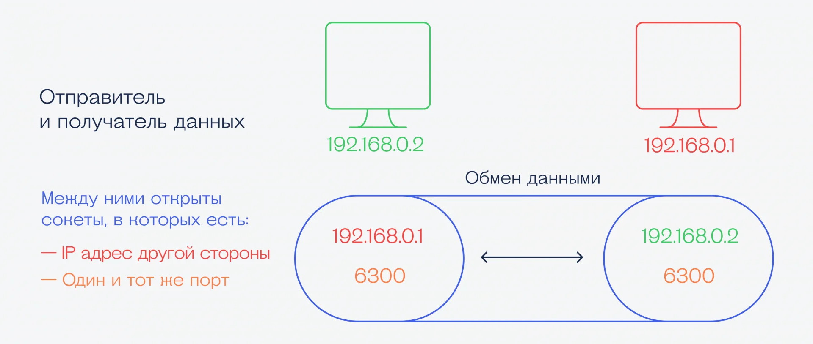
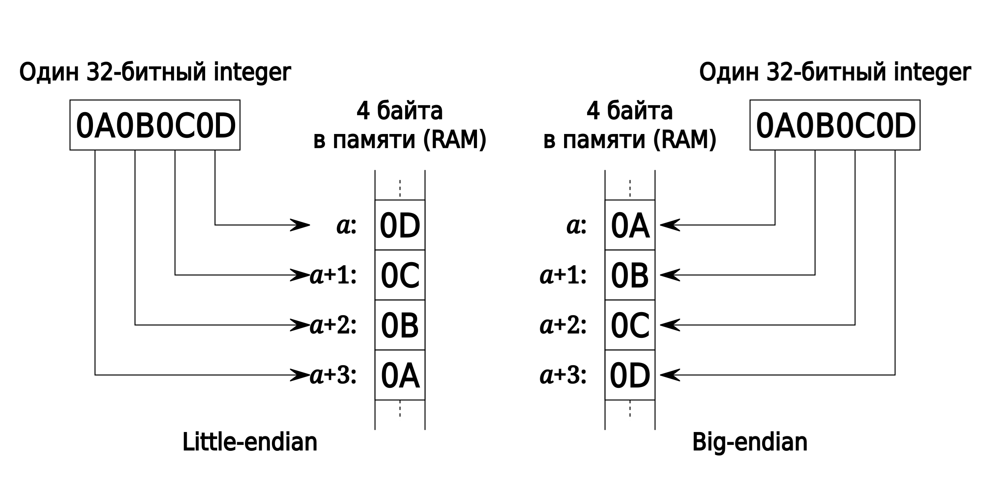
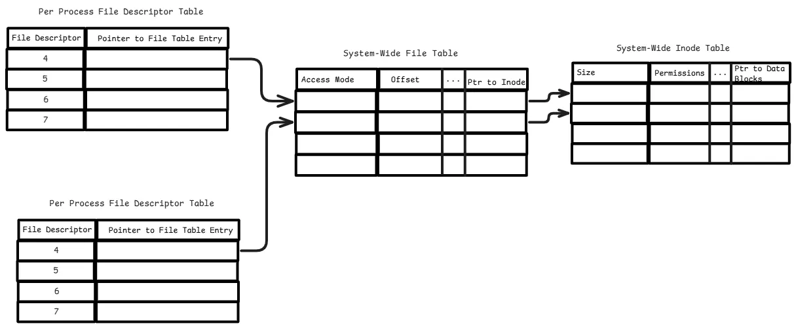
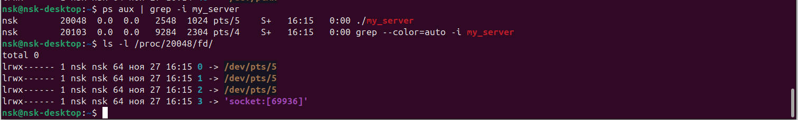
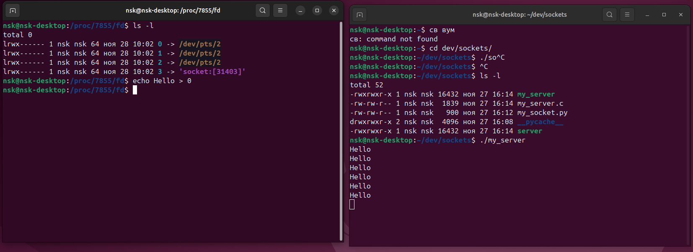

Работа c сокетами Беркли (Sockets).
Короткая выжимка из этих предыдущих лекций:
У каждого компьютера в сети есть IP-адрес, даже если это просто локальная сеть.
IP-адрес — это четыре числа от 0 до 255, разделённые точками, например 77.88.55.88 (это адрес сервера Яндекса).
С помощью этих адресов компьютеры знают, куда направить свои запросы и ответы.
Когда один компьютер соединяется с другим, они это делают через сетевой порт. Можно сказать, что порт — это номер соединения.
Сетевые порты в компьютере нумеруются от 1 до 65535, а компьютер сам следит за тем, как распределяются эти номера.
С помощью портов компьютер понимает, какие данные предназначены какой программе. Некоторые программы и соединения всегда используют один и тот же порт, а другие получают его случайным образом.
Сокет — это виртуальная конструкция из IP-адреса и номера порта. Её придумали для того, чтобы разработчикам было проще писать код, а программы могли передавать данные друг другу даже в пределах одного компьютера.
Смысл в том, чтобы программист работал не с IP-адресами и портами, разбираясь в тонкостях работы протоколов, а использовал что-то попроще. В итоге получается так:
программист пишет в программе, что он хочет сделать новый сокет;
указывает для него IP-адрес, если это необходимо;
программа собирает это в виртуальную конструкцию, и получается сокет;
после этого программист может отправлять данные просто в сокет и принимать их оттуда, а компьютер берёт на себя все вопросы по передаче данных.

Заголовочные файлы
Программная библиотека сокетов Беркли включает в себя множество связанных заголовочных файлов.
<sys/socket.h>- Базовые функции сокетовBSDи структуры данных.<netinet/in.h>- Семейства адресов/протоколовPF_INETиPF_INET6. Широко используются в сети Интернет, включают в себя IP-адреса, а также номера портовTCPиUDP.<sys/un.h>- Семейство адресовPF_UNIX/PF_LOCAL. Используется для локального взаимодействия между программами, запущенными на одном компьютере. В компьютерных сетях не применяется.<arpa/inet.h>- Функции для работы с числовыми IP-адресами.<netdb.h>- Функции для преобразования протокольных имен и имен хостов в числовые адреса. Используются локальные данные аналогичноDNS.
Структуры
sockaddr— обобщённая структура адреса, к которой, в зависимости от используемого семейства протоколов, приводится соответствующая структура, например:
struct sockaddr_in stSockAddr;
...
bind(SocketFD,(const struct sockaddr *)&stSockAddr, sizeof(struct sockaddr_in));
sockaddr_insockaddr_in6in_addrin6_addr
sockaddr_in
Посмотреть можно здесь
#include <netinet/in.h>
struct sockaddr_in {
sa_family_t sin_family; /* AF_INET */
in_port_t sin_port; /* Port number */
struct in_addr sin_addr; /* IPv4 address */
};
Описывает сокет для работы с протоколами IP. Значение поля sin_family всегда равно AF_INET. Поле sin_port содержит номер порта который намерен занять процесс. Поле sin_addr содержит IP адрес к которому будет привязан сокет.
in_addr
struct in_addr {
in_addr_t s_addr;
};
Структура in_addr содержит поле s_addr. Этому полю можно присвоить 32х битное значение IP адреса. Для перевода адреса в целое число из строкового представления можно воспользоваться функцией inet_addr, которой в качестве аргумента передается указатель на строку содержащую IP адрес в виде четырех десятичных чисел разделенных точками. Можно, также, воспользоваться одной из следующих констант:
INADDR_ANY //все адреса локального хоста (0.0.0.0);
INADDR_LOOPBACK //адрес loopback интерфейса (127.0.0.1);
INADDR_BROADCAST //широковещательный адрес (255.255.255.255).
При присвоении значений номеру порта и адресу следует учитывать, что порядок следования байтов на разных архитектурах различен. При передаче данных по сети общепринятым является представление чисел в формате big-endian, в котором самый старший байт целого числа имеет наименьший адрес, а самый младший байт имеет наибольший адрес. Компьютеры построенные на архитектуре Intel x86 используют схему представления целых чисел little-endian, в которой наименьший адрес имеет самый младший байт, а наибольший адрес имеет самый старший байт. Для преобразования числа из той схемы которая используется на компьютере к той которая используется в сети, и наоборот, применяются функции:
uint32_t htonl(uint32_t hostlong);
uint16_t htons(uint16_t hostshort);
uint32_t ntohl(uint32_t netlong);
uint16_t ntohl(uint16_t netshort);
Наглядный пример разницы Big-endian и little-endian (прочитать: “Путешествия Гулливера”).

Основные функции сокетов
Подробнее можно посмотреть Здесь.
Общие |
|
|---|---|
|
Создает новый сокет заданного типа и возвращает файловый дескриптор |
|
Отправить |
|
Получить |
|
Закрыть соединение (в случае |
Серверные |
|
|
Связывает созданный ранее |
|
Ожидает установления TCP соединения |
|
Принять запрос на установку соединения |
Клиентские |
|
|
Установить соединение, используя свободный локальный порт. |
socket()
Создаёт конечную точку соединения и возвращает файловый дескриптор (с типом файла S , Создают прямую связь между процессами в системе. Передают данные между процессами, которые запущены в различных средах либо даже на различных машинах.). Принимает три аргумента:
domain указывающий семейство протоколов создаваемого сокета
AF_INET для сетевого протокола IPv4
AF_INET6 для IPv6
AF_UNIX для локальных сокетов (используя файл)
и т.д. (порядка 29-ти разновидностей протоколов в Unix-like системах [1])
type
SOCK_STREAM - надёжная потокоориентированная служба (сервис) или потоковый сокет.
SOCK_DGRAM - служба датаграмм или датаграммный сокет.
SOCK_RAW - Сырой сокет — сырой протокол поверх сетевого уровня. Позволяющий собирать
TCP/IP-пакеты, контролируя каждый бит заголовка и отправляя в сеть нестандартные пакеты.
protocol - определяет используемый транспортный протокол. Самые распространённые — это
IPPROTO_TCP,IPPROTO_SCTP,IPPROTO_UDP,IPPROTO_DCCP. Эти протоколы указаны в<netinet/in.h>. Значение «0» может быть использовано для выбора протокола по умолчанию из указанного семейства (domain) и типа (type).
Функция возвращает −1 в случае ошибки. Иначе, она возвращает целое число, представляющее присвоенный дескриптор.
╔═══════════╦══════════════════════════╗
║ ║ Socket Type ║
║ Address ╟────────────┬─────────────╢
║ Family ║ SOCK_DGRAM │ SOCK_STREAM ║
╠═══════════╬════════════╪═════════════╣
║ IPX/SPX ║ SPX │ IPX ║
║ NetBIOS ║ NetBIOS │ n/a ║
║ IPv4 ║ UDP │ TCP ║
║ AppleTalk ║ DDP │ ADSP ║
║ IPv6 ║ UDP │ TCP ║
║ IrDA ║ IrLMP │ IrTTP ║
║ Bluetooth ║ ? │ RFCOMM ║
╚═══════════╩════════════╧═════════════╝
// Source - https://stackoverflow.com/a
// Posted by Ian Boyd, modified by community. See post 'Timeline' for change history
// Retrieved 2025-11-27, License - CC BY-SA 4.0
С
#include <sys/types.h>
#include <sys/socket.h>
int socket(int domain, int type, int protocol);
...
...
int main(){
struct sockaddr_in serv_addr;
...
...
// Создаем файловый дескриптор
sockfd = socket(AF_INET, SOCK_STREAM, 0);
// Указываем тип сокета Интернет
bzero((char *) &serv_addr, sizeof(serv_addr));
serv_addr.sin_family = AF_INET;
}
Python
import socket
# Создание объекта сокета.
sock_obj = socket.socket(socket.AF_INET, socket.SOCK_STREAM, 0)
# AF_INET, SOCK_STREAM и 0 используются по умолчанию при создании сокета.
# Поэтому можно просто писать:
sock_obj = socket.socket()
Файловый дескриптор
В Linux библиотека libc открывает для каждого запущенного приложения(процесса) 3 файл дескриптора, с номерами 0,1,2. Больше информации вы можете найти man stdio и man stdout
Файл дескриптор 0называетсяSTDINи ассоциируется с вводом данных у приложенияФайл дескриптор 1называетсяSTDOUTи используется приложениями для вывода данных, например командами printФайл дескриптор 2называетсяSTDERRи используется приложениями для вывода данных, сообщающих об ошибке
Файловые дескрипторы процесса
Каждый процесс в Unix/Linux имеет таблицу файловых дескрипторов, представляющую собой структуру, похожую на массив, в которой хранятся ссылки на файлы (файлы, сокеты и т. д.), открытые процессом. Эта таблица является локальной для процесса.
System File Table Системная таблица файлов — это структура данных ядра, которая содержит метаданные обо всех открытых файлах, включая информацию об их местоположении, режиме доступа, текущей позиции и т. д. Каждая запись в таблице файлов соответствует файловому дескриптору, предоставляя общую информацию для нескольких процессов.
File Offset: Current read/write position in the file.Access Mode: Read, write, or read-write mode (e.g., O_RDONLY, O_WRONLY).Pointer to Inode: Links the file table entry to the inode.Reference Count: Tracks how many file descriptors or processes share this entry.
System Inode Table
inode — это структура данных, которая содержит метаданные о файле, такие как его размер, разрешения, владелец, временные метки и указатели на блоки данных на диске.
Связь между Process FD table <–> System Table <–> Inode Table 
/proc
В директории /proc содержатся виртуальные файлы. Эти файлы перечислены в списке, но не существуют на диске, операционная система создает их “на лету”, когда вы пытаетесь прочитать их.
Что внутри процесса?
Директории с номерными именами представляют все текущие процессы. Когда процесс заканчивается, его субдиректория в директории /proc автоматически исчезает. Если вы откроете эти директории, пока они еще существуют, внутри вы обнаружите множество файлов, таких как:
attr cpuset fdinfo mountstats stat
auxv cwd loginuid oom_adj statm
clear_refs environ maps oom_score status
cmdline exe mem root task
coredump_filter fd mounts smaps wchan
Наиболее важные файлы:
cmdline: Содержит команду, запустившую процесс, со всеми своими параметрами.cwd: Содержит симлинк на текущую работающую директорию (current working directory - CWD), ссылку на исполняемый файл процесса, и ссылку на его корневую директорию.environ: Содержит все переменные среды окружения для данного процесса.fd: Содержит все файловые дескрипторы для данного процесса, показывая, какие файлы или устройства процесс задействует.maps,statm, andmem: Относятся к памяти задействованной в процессе.statandstatus: Содержит информацию о статусе процесса.
Пример Запустив программу с инициализацией сокета (возвращаемое значение - идентификатор файлового дескриптора) можно наблюдать появление нового файлового дескриптора для данного сокета.

В данном случае скомпилированный бинарный файл имеет название my_server.
Найти местоположение файловых дескрипторов для программы можно двумя командами:
ps aux | grep -i my_server # можно увидеть номер процесса вашей программы <my_server>
ls -l /proc/<номер процесса>/fd/
Попробуем следующий эксперимент: 
Что такое /dev/pts?
bind()
Связывает сокет с конкретным адресом. Когда сокет создается при помощи socket(), он ассоциируется с некоторым семейством адресов, но не с конкретным адресом. До того как сокет сможет принять входящие соединения, он должен быть связан с адресом. bind() принимает три аргумента:
sockfd — дескриптор, представляющий сокет при привязке
serv_addr — указатель на структуру
sockaddr, представляющую адрес, к которому привязываем.addrlen — поле
socklen_t, представляющее длину структурыsockaddr.
С
int bind(int sockfd, const struct sockaddr *my_addr, socklen_t addrlen);
listen()
Подготавливает привязываемый сокет к принятию входящих соединений. Данная функция применима только к типам сокетов SOCK_STREAM и SOCK_SEQPACKET. Принимает два аргумента:
sockfd — корректный дескриптор сокета.
backlog — целое число, означающее число установленных соединений, которые могут быть обработаны в любой момент времени (
размер очереди). Операционная система обычно ставит его равным максимальному значению.
C
int listen(int sockfd, int backlog);
accept()
Используется для принятия запроса на установление соединения от удаленного хоста. Принимает следующие аргументы:
sockfd — дескриптор слушающего сокета на принятие соединения.
cliaddr — указатель на структуру
sockaddr, для принятия информации об адресе клиента.addrlen — указатель на
socklen_t, определяющее размер структуры, содержащей клиентский адрес и переданной вaccept(). Когдаaccept()возвращает некоторое значение,socklen_tуказывает сколько байт структурыcliaddrиспользовано в данный момент.
C
#include <sys/types.h>
#include <sys/socket.h>
int accept(int sockfd, struct sockaddr *cliaddr, socklen_t *addrlen);
connect()
Устанавливает соединение с сервером.
Некоторые типы сокетов работают без установления соединения, это в основном касается UDP-сокетов. Для них соединение приобретает особое значение: цель по умолчанию для посылки и получения данных присваивается переданному адресу, позволяя использовать такие функции как send() и recv() на сокетах без установления соединения.
Загруженный сервер может отвергнуть попытку соединения, поэтому в некоторых видах программ необходимо предусмотреть повторные попытки соединения.
C
#include <sys/types.h>
#include <sys/socket.h>
int connect(int sockfd, const struct sockaddr *serv_addr, socklen_t addrlen);
Передача\прием данных
Для передачи данных можно пользоваться стандартными функциями чтения/записи файлов read и write, но есть специальные функции для передачи данных через сокеты:
send
recv
sendto
recvfrom
sendmsg
recvmsg
Нужно обратить внимание, что при использовании протокола TCP (сокеты типа SOCK_STREAM) есть вероятность получить меньше данных, чем было передано, так как ещё не все данные были переданы, поэтому нужно либо дождаться, когда функция recv возвратит 0 байт, либо выставить флаг MSG_WAITALL для функции recv, что заставит её дождаться окончания передачи. Для остальных типов сокетов флаг MSG_WAITALL ничего не меняет (например, в UDP весь пакет = целое сообщение).
send()
send, sendto - отправка данных.
C
#include <sys/types.h>
#include <sys/socket.h>
size_t send(int s, const void *buf, size_t len, int flags);
size_t sendto(int s, const void *buf, size_t len, int flags, const struct sockaddr *to, socklen_t tolen);
recv()
recv, recvfrom - чтение данных из сокета.
C
#include <sys/types.h>
#include <sys/socket.h>
size_t recv(int s, void *buf, size_t len, int flags);
size_t recvfrom(int s, void *buf, size_t len, int flags, struct sockaddr *from, socklen_t *fromlen);
Примеры
Клиент-серверная программа (Python)
TCP- Server
import socket
# Создаем сокет
server_socket = socket.socket(socket.AF_INET, socket.SOCK_STREAM)
# Привязываем сокет к IP-адресу и порту
server_socket.bind(('localhost', 12345))
# Слушаем входящие соединения
server_socket.listen(1)
print("Сервер запущен и ожидает подключений...")
# Принимаем входящее соединение
client_socket, client_address = server_socket.accept()
print(f"Подключение установлено с {client_address}")
# Получаем данные от клиента
data = client_socket.recv(1024)
print(f"Получены данные: {data}")
# Закрываем соединения
client_socket.close()
server_socket.close()
TCP-Client
import socket
# Создаем сокет
client_socket = socket.socket(socket.AF_INET, socket.SOCK_STREAM)
# Подключаемся к серверу
client_socket.connect(('localhost', 12345))
# Отправляем данные серверу
client_socket.sendall(b'Hello, server!')
# Закрываем соединение
client_socket.close()
UDP-Server
import socket
# Создаем сокет
server_socket = socket.socket(socket.AF_INET, socket.SOCK_DGRAM)
# Привязываем сокет к IP-адресу и порту
server_socket.bind(('localhost', 12345))
print("Сервер запущен и ожидает входящих данных...")
# Получаем данные от клиент
data, client_address = server_socket.recvfrom(1024)
print(f"Получены данные от {client_address}: {data}")
# Закрываем сокет
server_socket.close()
UDP-client
import socket
# Создаем сокет
client_socket = socket.socket(socket.AF_INET, socket.SOCK_DGRAM)
# Отправляем данные серверу
client_socket.sendto(b'Hello, server!', ('localhost', 12345))
# Закрываем сокет
client_socket.close()
Клиент-серверная программа на СИ
Сервер
#include <netinet/in.h>
#include <stdio.h>
#include <stdlib.h>
#include <string.h>
#include <sys/socket.h>
#include <unistd.h>
#define PORT 8080
int main(int argc, char const* argv[])
{
int server_fd, new_socket;
ssize_t valread;
struct sockaddr_in address;
int opt = 1;
socklen_t addrlen = sizeof(address);
char buffer[1024] = { 0 };
char* hello = "Hello from server";
// Creating socket file descriptor
if ((server_fd = socket(AF_INET, SOCK_STREAM, 0)) < 0) {
perror("socket failed");
exit(EXIT_FAILURE);
}
// Forcefully attaching socket to the port 8080
if (setsockopt(server_fd, SOL_SOCKET,
SO_REUSEADDR | SO_REUSEPORT, &opt,
sizeof(opt))) {
perror("setsockopt");
exit(EXIT_FAILURE);
}
address.sin_family = AF_INET;
address.sin_addr.s_addr = INADDR_ANY;
address.sin_port = htons(PORT);
// Forcefully attaching socket to the port 8080
if (bind(server_fd, (struct sockaddr*)&address,
sizeof(address))
< 0) {
perror("bind failed");
exit(EXIT_FAILURE);
}
if (listen(server_fd, 3) < 0) {
perror("listen");
exit(EXIT_FAILURE);
}
if ((new_socket
= accept(server_fd, (struct sockaddr*)&address,
&addrlen))
< 0) {
perror("accept");
exit(EXIT_FAILURE);
}
// subtract 1 for the null
// terminator at the end
valread = read(new_socket, buffer,
1024 - 1);
printf("%s\n", buffer);
send(new_socket, hello, strlen(hello), 0);
printf("Hello message sent\n");
// closing the connected socket
close(new_socket);
// closing the listening socket
close(server_fd);
return 0;
}
Клиент
#include <arpa/inet.h>
#include <stdio.h>
#include <string.h>
#include <sys/socket.h>
#include <unistd.h>
#define PORT 8080
int main(int argc, char const* argv[])
{
int status, valread, client_fd;
struct sockaddr_in serv_addr;
char* hello = "Hello from client";
char buffer[1024] = { 0 };
if ((client_fd = socket(AF_INET, SOCK_STREAM, 0)) < 0) {
printf("\n Socket creation error \n");
return -1;
}
serv_addr.sin_family = AF_INET;
serv_addr.sin_port = htons(PORT);
// Convert IPv4 and IPv6 addresses from text to binary form
if (inet_pton(AF_INET, "127.0.0.1", &serv_addr.sin_addr)
<= 0) {
printf(
"\nInvalid address/ Address not supported \n");
return -1;
}
if ((status
= connect(client_fd, (struct sockaddr*)&serv_addr,
sizeof(serv_addr)))
< 0) {
printf("\nConnection Failed \n");
return -1;
}
// subtract 1 for the null
// terminator at the end
send(client_fd, hello, strlen(hello), 0);
printf("Hello message sent\n");
valread = read(client_fd, buffer,
1024 - 1);
printf("%s\n", buffer);
// closing the connected socket
close(client_fd);
return 0;
}
Компиляция
gcc client.c -o clientgcc server.c -o server